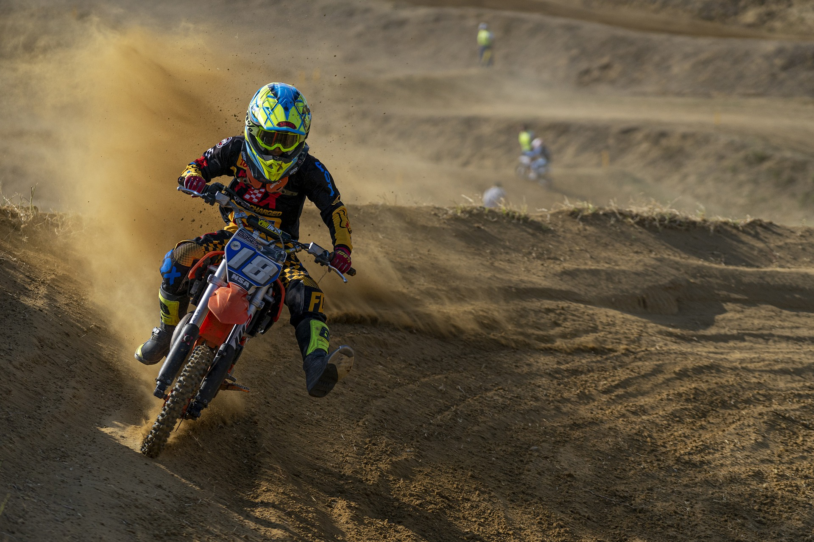

About Me

My name is Azeez Davis I'm 23 years old and I grew up in philadelphia,I currently Work for a logistics company full time, but when I'm not working I like to occupy myself by doing activities that I love. Among those things are coding and playing sports. I developed a love for computer science at a young age, I'd find myself building and creating small games and other things im not proud of like pirating movies.. but I knew I wanted to have a career in computer science, it is my absolute dream. As for sports.. well I was pretty good, but I stopped growing and took that as a sign that god had other plans for me.
My name is Azeez Davis I'm 23 years old and I grew up in philadelphia, Work for a logistics company full time, but when im not working I like to occupy myself by doing activities that I love. Among those things are coding and playing sports. I developed a love for computer science at a young age, I'd find myself building and creating small games and other things im not proud of like pirating movies.. but I knew I wanted to have a career in computer science, it is my absolute dream. As for sports.. well I was pretty good, but I stopped growing and took that as a sign that god had other plans for me.